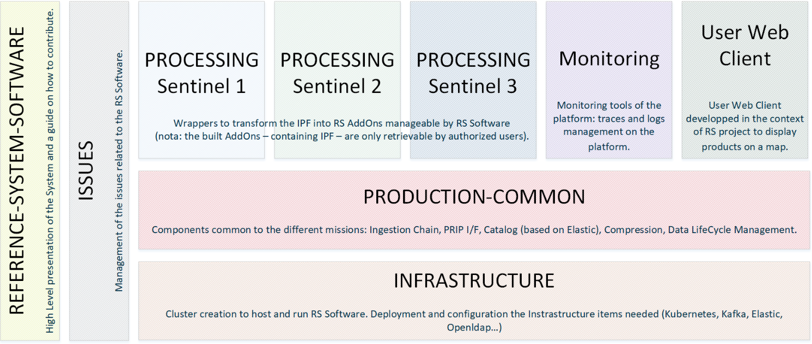

Copernicus
Reference System
The Copernicus Reference System Software is a scalable and open-source processing chain.
It has been developed in AGILE since 2021 under Copernicus, a programme of the European Union implemented by the European Space Agency.
This Open-Source solution is today able to manage in parallel the image processing of all the Copernicus Sentinel 1, 2 and 3 (S1, S2 and S3) missions relying on Public Cloud scaling capabilities.

GitHUB RS
The Reference System Service (RS) is a key component of the CSC Ground Segment, because it provides to the community a complete and open source processing and distribution environment software. Integrated with the Sentinel Data Processors and running on a Commercial Public Cloud, it has the capacity to substitute the nominal CSC Production and Distribution services. Provided by ESA, all Sentinel Data Processors are integrated, validated and published in the frame of the Reference System Service.
The Reference System Service is hosted on a secure Public Commercial Cloud and provides 3 operational functions:
- sampled systematic Production and Distribution Service;
- ad-hoc Production and Distribution Service;
- environment to assure the test, integration, validation, benchmarking of Sentinel Data Processors (new processor versions, new user level data, new Sentinel units).

This software is the exact complement of the ESA-driven Sentinel Data Processors. It provides all the components to integrate them in processing chains and to distribute the output products.
Sentinel Data Processor Publication Service
Copernicus Space Component (CSC) Sentinel Data Processors Publication Service is a key component of the CSC Reference System Service, it offers the environment for:
- News and announcements about the publication of new or updated versions of Sentinel Data Processors, with notifications for the authenticated users;
- Search of the published Sentinel Data Processors versions (as authenticated user), as well as defining permissions for download of published Sentinel Data Processors files;
- REST API based on OData protocol for searching and downloading of the published Sentinel Data Processors files.
Welcome to the Copernicus Reference System (RS): Unveiling the Architecture and Objectives
The Copernicus Reference System (RS) Software is a key component of the Copernicus Space Component (CSC) Ground Segment, offering an open-source processing and distribution environment. This software not only manages the image processing of Copernicus Sentinel 1, 2, and 3 (S1, S2, and S3) missions but also benefits from the scaling options of the public cloud. Integrated seamlessly with Sentinel Data Processors, the RS has the potential to substitute nominal CSC Production and Distribution services, embodying a collaborative effort through Free Open Source Software (FOSS).1. Repositories:
- RS Software: Presents system details, deployment information, and contributions.
- 4 Modules: Infrastructure, Production-common, Monitoring, and User Web Client.
- Issues: Manages problems related to the RS software.

Repository organization
2. RS-core Modules:
- RS-Core include all common components developed to support the processing and mission.
- Features:
- Inbound interfaces: ingestion chain receive data from reception stations (CADIP, EDRS), and auxiliary data from ESA’s Auxiliary Data Gathering System.
- Product availability to external users through oDATA and STAC APIs.
- Data cataloging, compression, life cycle management, monitoring and error management.
3. Sentinel Processing Chains (RS Add-ons):
- RS Addons chains will describe and process each processing chain on 3 missions (Copernicus S1,S2 and S3)
- Instrument Processing Facilities (IPF): Embedded in RS AddOns and provided by ESA.
- AddOns Structure: Utilizes a Spring Cloud Data Flow chain with two processor types:
- Processor Unit: trigger, prepare worker, router, filter.
- Data Processor Unit: execution worker.
Development and Collaboration:
The entire engineering phase has been collaboratively managed through the public GitHub Project COPRS. All developments and associated documentation are openly available. Embracing an AGILE methodology since 2021, this project operates under Copernicus, a program of the European Union implemented by the European Space Agency.
Access and Exploration:
All system components, along with their detailed documentation, can be accessed on GitHub. Have a look at the webpage and figures to get an insightful (visual) overview.
Embark on a journey through the Copernicus Reference System, where collaborative development, openness, and agility converge to drive innovation in Earth observation and data distribution.